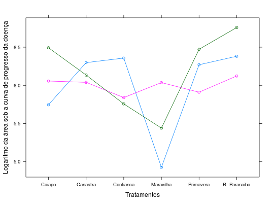

Dados do ensaio 1 de um experimento que avaliou as cultivares para a área foliar atacada por brusone (Pyricularia Orizae L.) em diferentes datas e se calculou área sob a curva do progresso da doença. Este primeiro experimento foi semeado na densidade de oitenta sementes por metro. Os dados foram transformados por logaritmo natural, procurando-se uma maior homogeneização das variâncias.
Um data.frame com 18 observações e 3 variáveis
cultblocoaacpdZIMMERMANN (2004), Tabela 12.7, pág. 251.
library(lattice) data(ZimmermannTb12.7)#> Warning: data set ‘ZimmermannTb12.7’ not foundstr(ZimmermannTb12.7)#> 'data.frame': 18 obs. of 3 variables: #> $ cult : Factor w/ 6 levels "Caiapo","Canastra",..: 1 2 3 4 5 6 1 2 3 4 ... #> $ bloco: Factor w/ 3 levels "1","2","3": 1 1 1 1 1 1 2 2 2 2 ... #> $ aacpd: num 5.75 6.3 6.36 4.93 6.27 ...xyplot(aacpd ~ cult , groups = bloco, data = ZimmermannTb12.7, type = c("p", "a"), xlab = "Tratamentos", ylab = "Logaritmo da área sob a curva de progresso da doença")aggregate(aacpd ~ cult, data = ZimmermannTb12.7, FUN = function(x) { c(mean = mean(x), var = var(x)) })#> cult aacpd.mean aacpd.var #> 1 Caiapo 6.09873000 0.14069436 #> 2 Canastra 6.15753333 0.01696240 #> 3 Confianca 5.98485333 0.10564007 #> 4 Maravilha 5.46796667 0.30812974 #> 5 Primavera 6.21744667 0.08106797 #> 6 R. Paranaiba 6.42030000 0.10175271